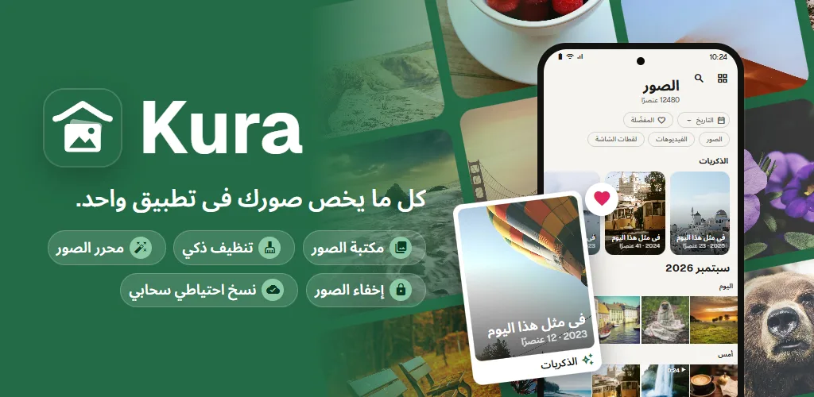
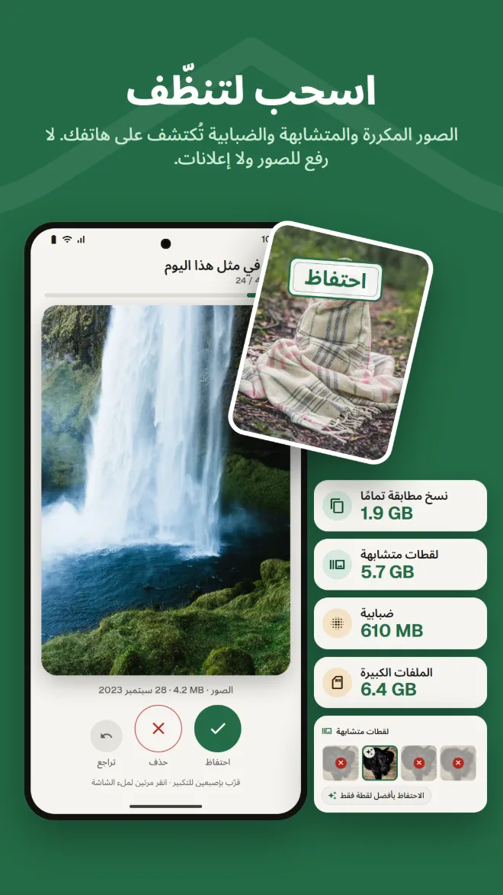
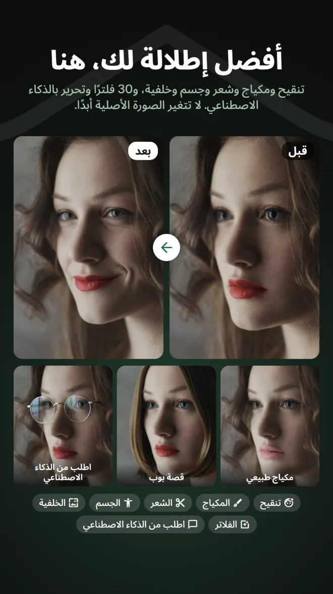
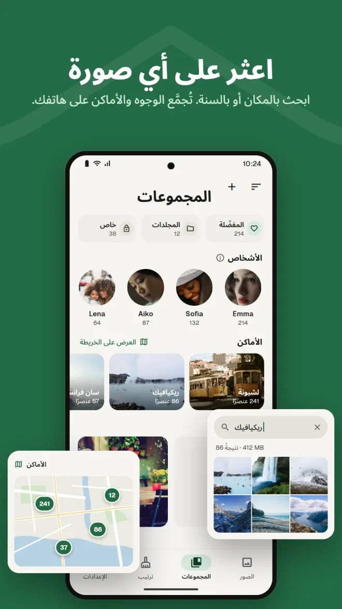
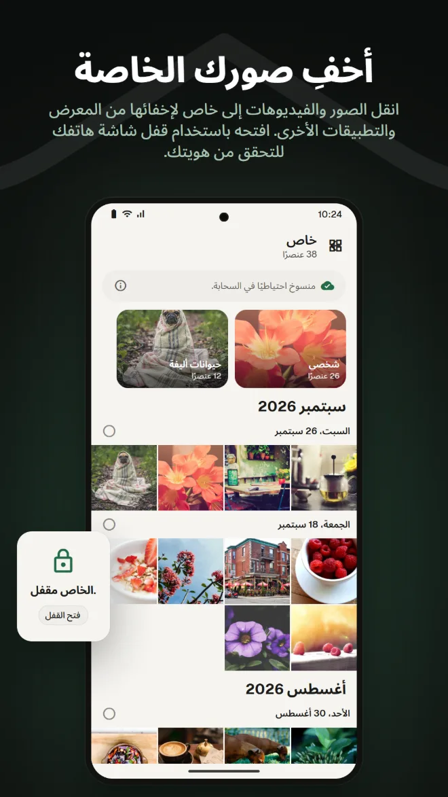
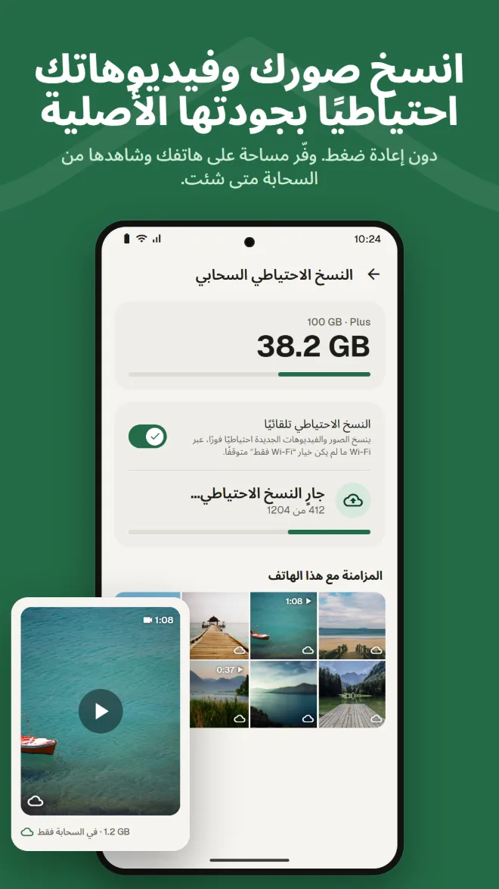
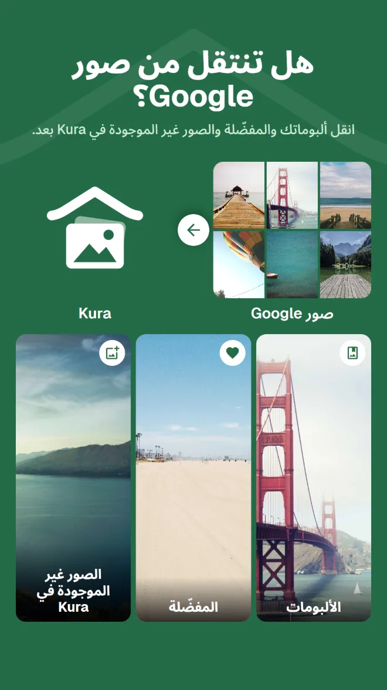

ابحث فيما تحتويه الصور
اعثر على الصور حسب المكان أو ما فيها أو النص المكتوب داخلها.
المعرض والتنظيف والتحرير بالذكاء الاصطناعي والمساحة الخاصة والنسخ الاحتياطي والانتقال من صور Google. مع Kura، لن تحتاج إلى تطبيق مختلف لكل مهمة.
Android 11 أو أحدث · التصفح والفرز والحذف مجانية · تسجيل الدخول بحساب Google

معرض لعرضها، وتطبيق تنظيف لتحرير المساحة، وتطبيق آخر للتحرير، وخدمة أخرى للنسخ الاحتياطي. وفي كل تنقّل تبحث عن الصورة نفسها من جديد.
Kura يفعل كل ذلك في مكتبة واحدة.
اعرض صورك ونظّفها وحرّرها وانسخها احتياطيًا، في المكان نفسه.
من المكتبة إلى التنظيف والتحرير والانتقال والنسخ الاحتياطي.
يعثر Kura على هاتفك على النسخ المطابقة تمامًا والصور المتشابهة والصور الضبابية والملفات الكبيرة. اسحب يمينًا للاحتفاظ ويسارًا للحذف، واعرف فورًا كم من المساحة يمكنك تحريرها.

تنقيح وتشكيل ومكياج وشعر وخلفية، إلى جانب 30 فلترًا وتعديلات وقص. وهناك فلاتر تجعل الطعام شهيًا وأدوات للجسم تضبط القوام كله. تُحفظ نسخة دائمًا، فتبقى الصورة الأصلية كما هي.

شبكة حسب التاريخ، مع ذكريات اليوم نفسه من السنوات الماضية. ابحث حسب المكان أو ما في الصورة أو النص المكتوب فيها، وتُجمَّع الوجوه حسب الشخص على هاتفك.

انقل الصور والفيديوهات إلى «خاص» لإخفائها من المعرض والتطبيقات الأخرى. وافتحه باستخدام قفل شاشة هاتفك.

انسخ الصور والفيديوهات احتياطيًا دون إعادة ضغط. أزل النسخ المحفوظة من هاتفك لتحرير المساحة؛ وتبقى قابلة للعرض من السحابة.

ما عليك سوى إرسال ملف .zip من Google Takeout عبر التطبيق أو تطبيق الويب. ينقل Kura ألبوماتك والمفضّلة والصور غير الموجودة فيه بعد. يفك خادم Kura ضغط الملف في الخلفية، لذا يمكنك إغلاق التطبيق والمتصفح.

يمكنك عرض الصور الموجودة في سحابة Kura وتنظيمها وتنظيفها وتحريرها ومشاركتها ورفعها في تطبيق الويب، تمامًا كما في التطبيق. وتبقى المفضّلة متزامنة مع التطبيق.
افتح تطبيق الويبتسجيل الدخول بحساب Google · متاح بالإنجليزية واليابانية فقط
كل ما تتوقعه من المعرض الذي تستخدمه كل يوم.
اعثر على الصور حسب المكان أو ما فيها أو النص المكتوب داخلها.
تُجمَّع الوجوه حسب الشخص على هاتفك، وتظهر صورك على الخريطة.
صور اليوم نفسه من السنوات الماضية، في أعلى مكتبتك.
تعديل السطوع والألوان، والقص والفرشاة، وفلاتر للطعام أيضًا.
أضف تاريخ انتهاء وكلمة مرور، وأرسلها إلى من لا يملكون التطبيق.
أكّد بقفل الشاشة في كل مرة تفتحه. ويمكنك أيضًا إخفاء «خاص».
ثبّته وستظهر صورك مرتبة بالفعل.
احصل عليه من Google Play (Android 11 أو أحدث)
اختر «السماح بالكل» لتحميل مكتبتك كاملة
سجّل الدخول بحساب Google
رتّب فورًا، وأضف النسخ الاحتياطي عندما تحتاجه
بلا إعلانات. لا تدفع إلا عندما تستخدم السحابة.
كل ما على هاتفك
دفع شهري عبر Google Play. يمكنك الإلغاء في أي وقت
يعرض Google Play الأسعار بعملتك المحلية.
لا تغادر الصور هاتفك إلا عندما تقوم بإجراء يرسلها بوضوح إلى مكان ما.
اكتشاف الصور المكررة والضبابية والوجوه والأشياء والنصوص يعمل على هاتفك. لا تُرفع أي صورة لفرزها.
يسألك Android قبل حذف أي ملف، وتبقى الصور المحذوفة في سلة المهملات حتى تفرغها.
عند تسجيل الدخول، لا يحتفظ خادمنا إلا بمعرّف حساب Google الخاص بك. ولا يُرسل اسمك ولا بريدك الإلكتروني أبدًا.
يرسل التحرير بالذكاء الاصطناعي المنطقة المحيطة بالوجه فقط، ولا تُحفظ الصورة ولا النتيجة على الخادم.
بلا إعلانات · التصفح والفرز والحذف مجانية